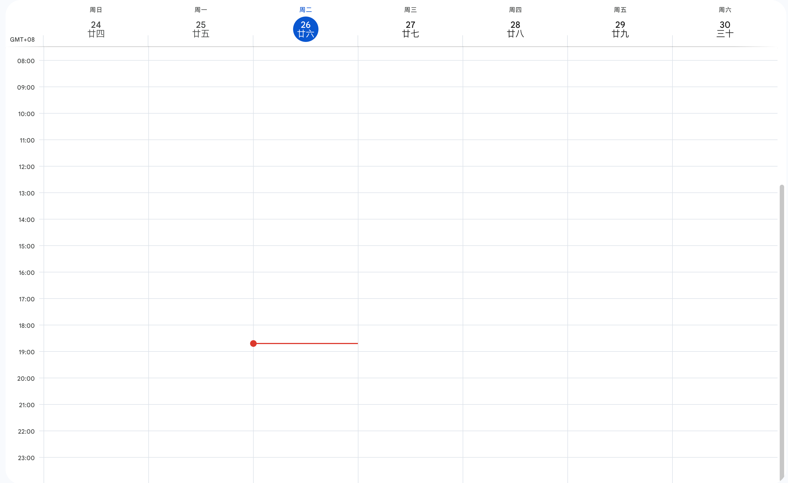

1 | title: 时间管理【2】 |
目标管理
时间管理的核心是目标管理，要将大部分的时间聚集在明确的大目标上。
那么如何制定一个好的目标呢？SMART 法则，简单来说：
什么时间内
做什么事情
达到什么程度
人生目标九宫格
包括：工作、学习、社交、爱好、健康、休息、家庭、财务，以及基于中位的“我”
八个领域要兼顾，但重要性并不一样，需要有侧重的分配时间，这个侧重对于不同人在不同阶段可能都不一样
用重要紧急度模型来判断对于不同方面的侧重，从而做出更合适的时间分配
甚至在不同阶段可能九宫格的数量都不一样，例如在学校学习大于其他一切
精力管理
睡眠管理
消耗身体能量、解决今天的事情、创造适合的睡眠环境
找个自己觉得舒服的入睡和醒来时间，睡眠时间应该在 6 小时以上，养成好的习惯
排除干扰（手机等），创造适合的环境（暖和的被窝），以及一些可行的辅助（借助手环等工具分析睡眠状况，寻找适合睡眠状况）
精力管理——作息时间表
在精力好的时候做重要的事情
可以记录下每个时间段做的事情，做事的状态，据此分析自己精力好的时间、条件
时间可以分为四种（为时间贴标签，更好的做时间管理）
金牛时间：状态好的时间，适合用于做重要的，有挑战的事情
蝴蝶时间：偶尔出现，灵光一闪，适合处理一些需要思考、创造的事情
蜗牛时间：效率较低，不能专注，适合做一些不重要、简单的工作
苍蝇时间：一些坏习惯，如睡前玩手机等，需要改正
日程管理
使用日程表管理时间：以时间为中心，划分时间单元，填入具体事项
Google 的日历其实就是一个很好的日程表：

注意：留一点备选项（某个事项是可能延迟的）、随时更新
长周期日程规划：星期、月、年
学会把大的工作分解
重要的、紧急的先安排——石块装杯法
碎片时间管理
碎片时间多而杂，利用起来也是很有价值的（思考一下分薪）
思考自己在1 分钟、5 分钟、10 分钟的时间碎片能做什么
做一些规划，例如将可以在碎片时间做的事情列出来
场景化：
碎片时间的不同场景，可能适合做不同的事情
为固定场景分配固定的事情，培养良好的利用碎片时间的习惯
大任务可以拆分成小任务放到各个小的碎片时间里面完成
我的碎片化时间
起床洗漱梳妆时间
- 几分钟的时间，耳朵闲着，可以听听英语
早晚上班下班在路上的时间
- 走路，约半小时，同样只有耳朵闲着
中午晚上吃饭时，排队、等电梯的时间
- 1-5 分钟，可以看看手机
晚上睡前时间
- 有比较大块的时间，半小时到一小时不等
效率管理
整理办公
四步法：取出、分类整理、减量、放回
一些整理电脑文件技巧：平时注意整理归纳
搜索小技巧：虽然说了很多技巧，但现在 GPT 完全可以取代已有的技巧
- PS：更需要学习向 GPT 问话的技巧
进入心流小技巧
创造环境暗示
开关暗示——巴普洛夫的那只听见铃声就会流口水的狗
步骤要具体，一步一步进入
外部监督：番茄钟等
降低门槛：从简单的事情开始
复利思维
集中注意力
多思考一件事情的多维价值
马太效应：强者越强，在关键的事情上要做到高质量
外包
核心思维：不是所有事情都要亲力亲为
情绪管理
情绪容易带来的问题：拖延
变消极想法为积极想法
用身体动作增加自信
给自己一点小的奖励
迈出简单第一步
群体作用
ABC 情绪疗法
诱发性事件->信念->结果
简单来说需要多考虑引发情绪的原因，而不是只看到最表面的时间
试着从多个不同的角度考虑“想法”和“情绪”，不同想法会带来不同的情绪
试着从更“好的”想法去应对不好的情绪
DSIC 性格分类，两个维度，一些指导